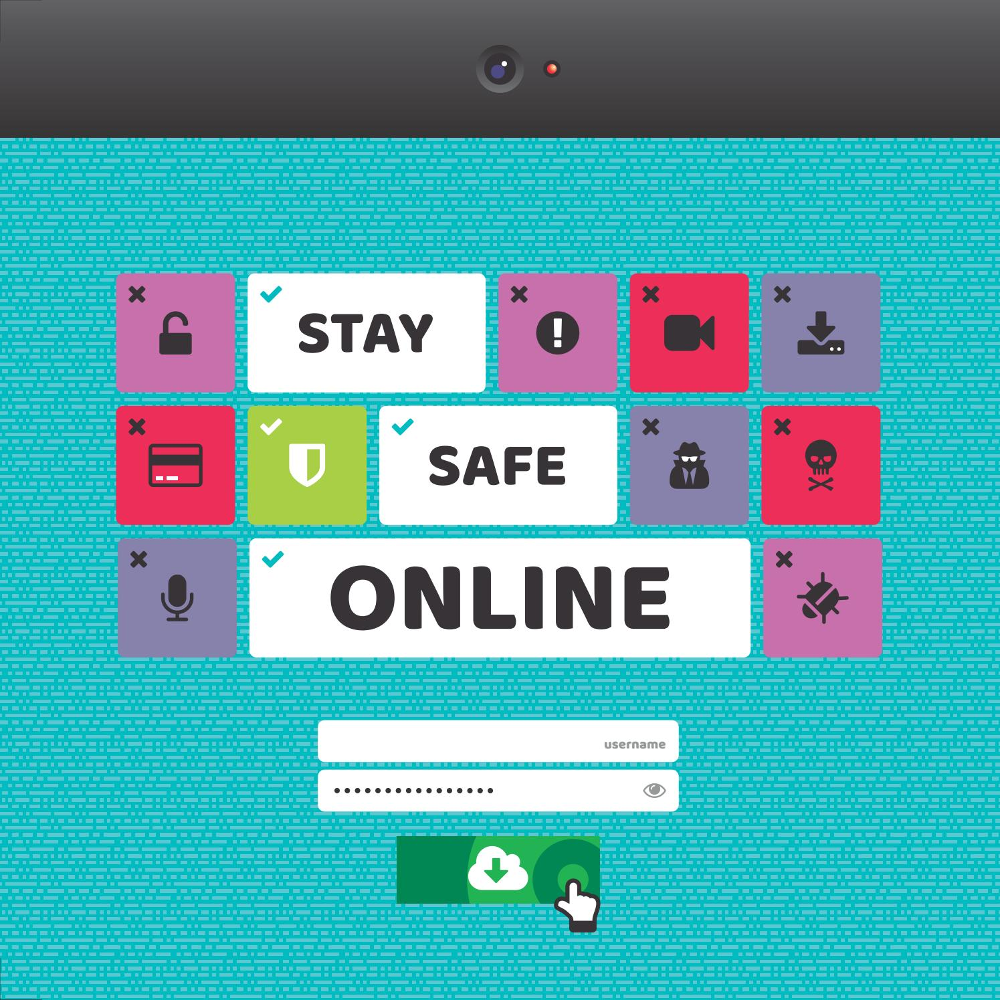
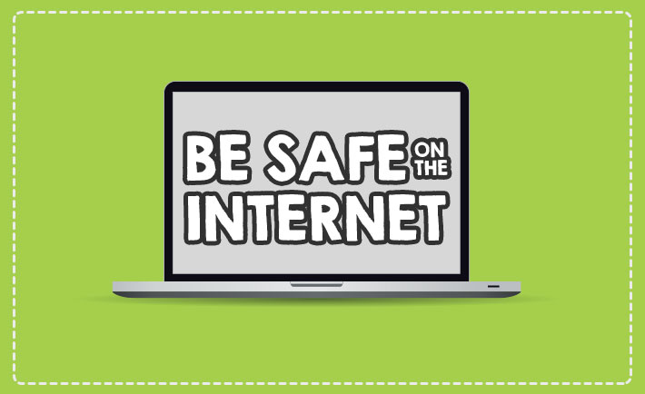

Staying safe online

Introducing the purpose of the campaign, with a hook to engage people, telling them why the campaign matters and why they should support it.
The Internet and social media provide incredible opportunities for children to learn, participate and socialize but they also bring significant challenges for the protection of children from abuse and violence. UNICEF India ASLI DOST #Staysafeonline campaign aims to raise awareness among boys and girls on how to safely navigate the online world.
UNICEF ASLI DOST #Staysafeonline
Do not keep it for yourself, ask for help or advice to a REAL friend or if you need more help talk to an adult you trust or call Childline at 1098 day & night
How can you BE a REAL friend #Staysafeonline?
BE THERE for a friend in need
Treat others with RESPECT
HELP others to BE REAL friends
Tell us what you think! Tell us how do you keep yourself and help others to #StaySafeOnline? How you are a REAL Friend Online or how your friends were REAL Friends to you at UNICEF Facebook and Twitter
Are you in danger or you need urgent help? Do NOT wait. Talk to an adult you trust or call Childline at 1098 during day and night.
>

Children make up one-third of all internet users globally
Even in countries where overall internet penetration is relatively low, usage among young people is sometimes as much as double the national average. With the rapid expansion of communication technologies shrinking the digital divide protecting children online in the world today is an urgent global priority.
Online abuse and exploitation most often takes place in the deep privacy of the computer, the mobile phone or any other electronic device. It can move anonymously from the private to the collective and across countries and borders, and at lightning speed.
You’re online and come across something that makes you feel uncomfortable or worried. Maybe a friend from school is being bullied and you don’t know what to do. Or maybe, someone’s messages go from friendly to threatening.
There are so many things to love about being connected, but the internet is also being misused and abused every day, and young people are paying the price.
How do we make the internet a safer place for all of us? Here’s what you can do today:
Be kind online. Support your peers by sending positive messages, a smile or a high-five.
Share these videos to spread the word about online safety and get your friends talking.
Check your settings and your passwords: is your password 12345? Have you shared it with a friend? Who can see what you post online? When’s the last time you reviewed your privacy settings?
And remember, it starts with you! Don’t spread rumours or share hurtful or embarrassing stories or photos. What may seem like a harmless joke to one person can be deeply hurtful to others.